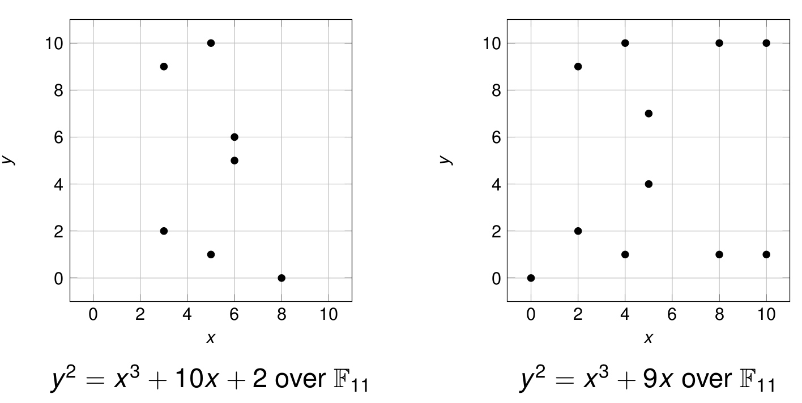

Department of Electrical Engineering, IIT Bombay
October 6, 2023
Given a composite integer N, the factoring problem is to find integers p,q >1 such that pq = N
Can be solved in exponential time
No polynomial-time algorithm is known for factoring
Algorithm for generating an n-bit prime
Input: Length n, loop count t
Output: A uniform n-bit prime \begin{align*} & \textbf{for } i=1 \text{ to } t:\\ &\quad p' \leftarrow \{0,1\}^{n-1}\\ &\quad p \coloneqq 1 || p' \\ &\quad \textbf{if } p \text{ is prime } \textbf{return } p\\ &\textbf{return } \textsf{fail} \end{align*}
We need to clarify two points
Theorem: For any n > 1, the fraction of n-bit integers that are prime is at least \frac{1}{3n}
Set the loop count t = 3n^2
The probability that a prime is not chosen in all t iterations is at most \left(1-\frac{1}{3n}\right)^t \leq e^{-n}
First efficient algorithms were developed in the 70s
Probabilistic algorithms with following guarantees
A deterministic polynomial-time algorithm was found in 2002 by Agrawal, Kayal, Saxena (AKS)
Fermat’s little theorem: If p is a prime and a is any integer not divisible by p, then a^{p-1} = 1 \bmod p.
The Primality Test
If a^{N-1} = 1 \bmod N, we get no information about the primality of N
Suppose a \in \{1,2,\ldots,N-1\} and a \notin \mathbb{Z}_N^*
Integers in \{1,\ldots,N-1\} not belonging to \mathbb{Z}_N^* are rare
If N is prime, then there are no such integers
For composite N = p_1^{e_1} \cdots p_k^{e_k}, we have |\mathbb{Z}_N^*| =\phi(N) =\prod_i p_i^{e_i-1}(p_i-1)
If p_1,p_2,\ldots,p_k are large primes, then the fraction of \{1,2,\ldots,N-1\} in \mathbb{Z}_N^* is close to 1
We say that an integer a \in \mathbb{Z}_N^* is a witness for compositeness of N if a^{N-1} \neq 1 \bmod N
\gcd(a, N) = 1 \implies \gcd(a^{N-1}, N) = 1
So the a’s in \mathbb{Z}_N^* may or may not be witnesses
Theorem If there exists a witness in \mathbb{Z}_N^* that N is composite, then at least half the elements of \mathbb{Z}_N^* are witnesses that N is composite
If a witness exists, the following primality test fails to detect the compositeness of N with probability at most 2^{-t}
Theorem: Suppose there exists a witness that N is composite. Then at least half the elements of \mathbb{Z}_N^* are witnesses that N is composite.
Proof
We say that x \in \mathbb{Z}_N^* is a square root of 1 modulo N if x^2 = 1 \bmod N.
Lemma: If N is an odd prime, then the only square roots of 1 modulo N are \pm 1 \bmod N.
For an odd prime N, we have N-1 = 2^r u where r \ge 1 and u is odd
If a \in \mathbb{Z}_N^*, then a^{N-1} = a^{2^ru} = 1 \bmod N
Consider the sequence a^u \bmod N,a^{2u} \bmod N, \ldots, a^{2^r u} \bmod N
It can only be in one of the following forms
If for an odd integer N, we do not observe this sequence then N is composite
In other words, when N is an odd prime, the sequence a^u \bmod N,a^{2u} \bmod N, \ldots, a^{2^r u} \bmod N satisfies the following conditions
We say that a \in \mathbb{Z}_N^* is a strong witness that N is composite if
a^u \neq 1 \bmod N and
a^{2^i u} \neq -1 \bmod N for all i \in \{0,1,2,\ldots,r-1\}.
If we can find even one strong witness, we can conclude that N is composite.
Theorem Let N be an odd number that is not a prime power. Then at least half the elements of \mathbb{Z}_N^* are strong witnesses that N is composite.
Let \textsf{Bad} \subseteq \mathbb{Z}_N^* be the set of elements that are not strong witnesses
We can define a set \textsf{Bad}' such that
See proof of Theorem 9.40 in Katz & Lindell
Input: Odd integer N > 1 and parameter 1^t
Output: A decision as to whether N is prime or composite \begin{align*} & \text{{Compute $r \ge 1$ and odd $u$ such that $N-1 = 2^ru$}}\\ & \textbf{if } \text{$N$ is a perfect power, \textbf{return} ``composite''}\\ & \textbf{for } j=1 \text{ to } t:\\ &\quad a \leftarrow \{1,\ldots,N-1\}\\ &\quad \textbf{if } \text{$a^u \neq \pm 1 \bmod N$ and}\\ &\quad \quad \text{$a^{2^iu} \neq -1 \bmod N$ for $i \in \{1,\ldots,r-1\}$ } \\ &\quad \quad \text{\textbf{return} ``composite''}\\ &\quad \textbf{end if } \\ &\textbf{end for } \\ & \textbf{return } \text{``prime''} \end{align*}
Let \textsf{GenModulus} be a PPT algorithm that, on input 1^n, outputs (N,p,q) where N = pq, and p and q are n-bit primes except with probability negligible in n.
The factoring experiment \textsf{Factor}_{\mathcal{A}, \textsf{GenModulus}}(n):
We use p', q' in the above experiment because it is possible that \textsf{GenModulus} returns composite integers p, q albeit with negligible probability
Definition: Factoring is hard relative to \textsf{GenModulus} if for all PPT algorithms \mathcal{A} there exists a negligible function \textsf{negl} such that \Pr[\textsf{Factor}_{\mathcal{A}, \textsf{GenModulus}}(n) = 1] \le \textsf{negl}(n).
The factoring assumption states that there exists a \textsf{GenModulus} relative to which factoring is hard.
Let \textsf{GenRSA} be a PPT algorithm that on input 1^n, outputs a modulus N that is the product of two n-bit primes, along with integers e,d > 1 satisfying ed = 1 \bmod \phi(N)
Define a public-key encryption scheme as follows:
\textsf{RSA-inv}_{\mathcal{A}, \textsf{GenRSA}}(n):
Definition: The RSA problem is hard relative to \textsf{GenRSA} if for all PPT algorithms \mathcal{A} there exists a negligible function \textsf{negl} such that \Pr[\textsf{RSA-inv}_{\mathcal{A}, \textsf{GenRSA}}(n) = 1] \le \textsf{negl}(n).
The RSA assumption states that there exists a \textsf{GenRSA} relative to which RSA is hard.
The RSA assumption is a stronger assumption than the factoring assumption
Definition: Let G be a finite group. For g \in G, the subgroup generated by g is given by \langle g \rangle = \{g, g^2, \ldots \}.
Definition: Let G be a finite group. We call G a cyclic group if there exists a g \in G such that G = \langle g \rangle. Such a g is called a generator of G.
Examples
Definition: Let G be a finite group and g \in G. The order of g is the smallest positive integer i for which g^i = 1.
Proposition: In a finite group G, the order of an element g equals the order of the subgroup \langle g \rangle.
Corollary: If G is a group of prime order p, then G is cyclic. Furthermore, all elements of G except the identity are generators of G.
Theorem: If p is a prime, then Z_p^* is a cyclic group of order p-1
Proof can be found in Prof. Forney’s notes
Let \mathcal{G} denote a polynomial-time, cyclic group generation algorithm which outputs a group, its order, and a generator
The discrete-logarithm experiment \textsf{DLog}_{\mathcal{A},\mathcal{G}}(n)
Definition: We say the discrete-logarithm problem is hard relative to \mathcal{G} if for all PPT algorithms \mathcal{A} there exists a negligible function \textsf{negl} such that \Pr[\textsf{DLog}_{\mathcal{A}, \mathcal{G}}(n) = 1] \le \textsf{negl}(n).
The discrete-logarithm assumption states that there exists a \mathcal{G} relative to which the discrete-logarithm problem is hard
Related to the problem of computing discrete logarithms, but not known to be equivalent to it
Two important variants
Let \mathcal{G} denote a polynomial-time, cyclic group generation algorithm
The CDH experiment \textsf{CDH}_{\mathcal{A},\mathcal{G}}(n)
Definition: We say the CDH problem is hard relative to \mathcal{G} if for all PPT algorithms \mathcal{A} there exists a negligible function \textsf{negl} such that \Pr[\textsf{CDH}_{\mathcal{A}, \mathcal{G}}(n) = 1] \le \textsf{negl}(n).
The CDH assumption states that there exists a \mathcal{G} relative to which the CDH problem is hard
Let \mathcal{G} denote a polynomial-time, cyclic group generation algorithm
Definition: We say the DDH problem is hard relative to \mathcal{G} if for all PPT algorithms \mathcal{A} there exists a negligible function \textsf{negl} such that \begin{align*} &\bigg| \Pr[\mathcal{A}(G,q,g,g^x,g^y,g^z) = 1] \\ &\ \ - \Pr[\mathcal{A}(G,q,g,g^x,g^y,g^{xy}) = 1]\bigg| \le \textsf{negl}(n)\end{align*} where x,y,z\in \mathbb{Z}_q are uniformly chosen
The DDH assumption states that there exists a \mathcal{G} relative to which the DDH problem is hard
Cyclic groups of prime order are preferred because the DL problem is hardest in such groups
Finding generators in prime-order cyclic groups is trivial
Subgroups of \mathbb{Z}_p^* and elliptic curves are two sources of prime-order cyclic groups
Theorem: Let p=rq+1 with p,q prime. Then G = \{ h^r \bmod p \mid h \in \mathbb{Z}_p^*\} is a subgroup of \mathbb{Z}_p^* of order q.
Proof
G = \{ h^r \bmod p \mid h \in \mathbb{Z}_p^*\}
A generator of the subgroup G can be found as follows
Let n = \| q \| and l = \|p\|
Two types of algorithms are known for computing discrete logarithms in order-q subgroups of \mathbb{Z}_p^*
For a fixed security level, say 2^{128} operations, n and l should be chosen as small as possible
Effective key length is a value n such that the best known algorithm takes roughly 2^n time
NIST recommended key lengths
The set E of real solutions (x,y) of \begin{equation*} y^2 = x^3 + ax + b \end{equation*} along with a “point at infinity” \mathcal{O} where 4a^3 + 27b^2 \neq 0
A set F together with two binary operations + and \ast is a field if
A finite field is a field with a finite cardinality.
\mathbb{Z}_p is a finite field for prime p
For p \ge 5, the set of solutions (x,y) in \mathbb{Z}_p^2 of \begin{equation*} y^2 = x^3 + ax + b \end{equation*} along with a “point at infinity” \mathcal{O} where 4a^3 + 27b^2 \neq 0
Point addition formulas derives from the reals are used
Example: y^2 = x^3+10x+2 over \mathbb{F}_{11}
There is a polytime-time algorithm for counting the number of points on an elliptic curve over \mathbb{Z}_p
Choose values for a,b in the equations y^2 = x^3 + ax+b and check if |E| is prime or r times a prime
In the latter case, choose G = \{rP \mid P \in E\}
Sections 9.2, 9.3 of Katz and Lindell
Section 10.4 of Katz and Lindell
Chapter 2 of my Bitcoin notes https://www.ee.iitb.ac.in/~sarva/bitcoin.html